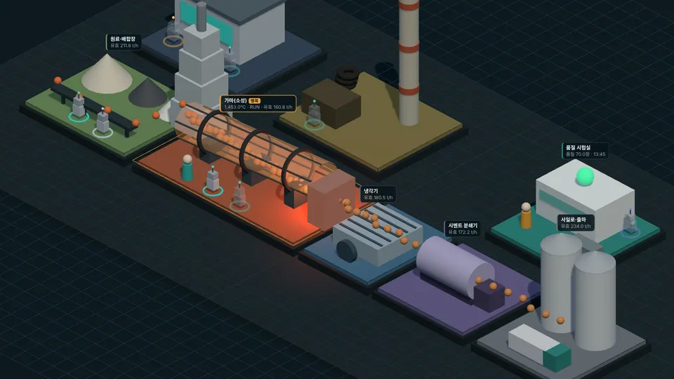
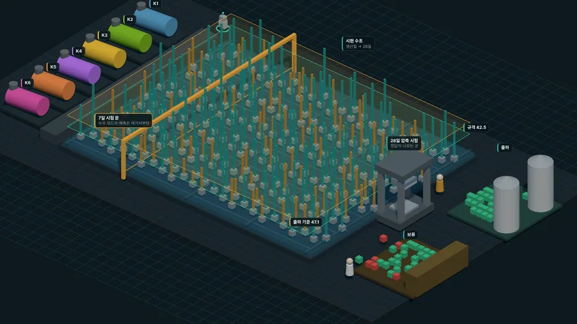

스마트 팩토리 World · 시멘트 제조업

시멘트 제조업
재료비를 낮추면 강도가 떨어지고, 연료를 아끼면 덜 구워지고, 폐자원 연료로 바꾸면 생산량이 준다. 이 세 가지 상충을 한 공장 위에서 봅니다.
원료·배합→가마(소성) · 병목→냉각→분쇄→사일로·출하
글 · 안상선 ((주)M-Robo 대표) · 교육용 가상 공장 · 강의 AI를 활용한 시멘트 공정 최적화
챕터

챕터 1 · 공장 전체
공장 World
가마의 37분 지연과 정지·재가동, 소프트센서 예측. 병목 신호판(5신호·TOC)과 결정 기록(제안 → 관문 → 승인).

챕터 2 · 품질 시험실
28일 타임머신
오늘 만든 시멘트의 28일 강도를 AI가 생산일에 말하고, 28일 뒤 압축 시험으로 확인. 출하·보류 판정, 처음 보는 가마, 7일 누수, SHAP.
가마 · 준비 중
챕터 3 · 가마
연료를 얼마나 줄일 수 있나
연료 절감 시나리오와 덜 구워질 위험 — 10주 요인 분석·경제성 평가.
관제실 · 준비 중
챕터 4 · 관제실
경계선 찾기
불량 확률 · 기대손실 · 절감액의 균형점, 허용 위험별 권고안 — 11주.
굴뚝 · 준비 중
챕터 5 · 굴뚝·대체연료
폐자원 연료
대체율 구간별 생산량·품질 · 공개 배출 데이터 — 12주, 확인 카드 B.
이 업종의 World
| 구성 | 내용 |
|---|---|
| 구역 8 | 원료·배합장 · 가마 · 냉각기 · 시멘트 분쇄기 · 품질 시험실 · 굴뚝·대체연료 · 사일로·출하 · 관제실 |
| 사람 3 | 박사(공장장) · 조수 하루(운전원) · 초파리 연구원(시험실·검증) |
| AI 에이전트 8 | 배합 · 주판봇(원가) · 소프트센서 · 에너지 · 위험 · 환경 · 검사 · 보고 — 제안만, 적용·승인은 사람 |
| 규칙 7 | 단가표는 사람만 · AI의 답은 제안 · 설정값 적용은 운전원 · 정지 구간 제외는 기록과 승인 · 미래 정보 금지 · 없는 규격 인용 금지 · 목표에 딱 맞추지 않기 |
| 데이터 | ch05 로트 데이터(3,000 로트 · 가마 6기) · ch08 가마 1분 데이터(4,320분) — 모두 교육용 가상 데이터 |
정의 파일: world.json · 설명: README